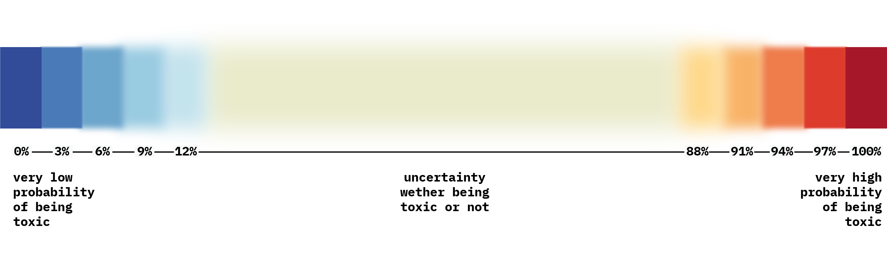

Visualizing (Un)certainty in Machine Learning Predictions
Representing how confident a user should be in the result of a machine learning prediction
Click Send to send your input to the Algorithm
Legend:

About
This website visualizes how certain a machine learning algorithm is,
regarding the classification of whether a written comment is toxic, or not.
The concept of the visualization aims to communicate to a potential user
that the algorithm’s classification of highly contextual information is never
a binary classification.
Info
Team: Özge Pazar (Psychologist), Robin Coenen (Designer), Yiran Ni (Designer)
Special Thanks to: Neil Oliver
API: Perspective API